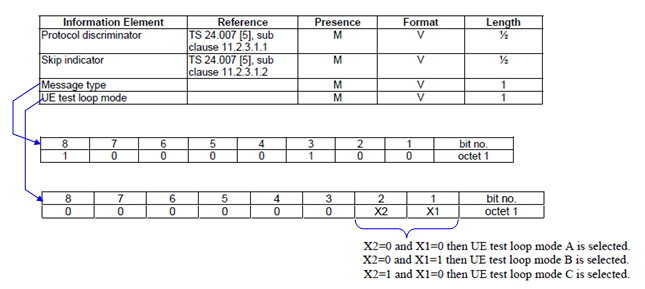
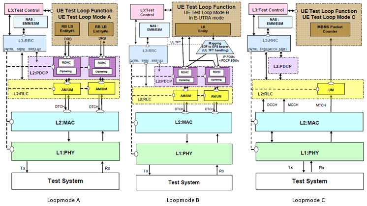
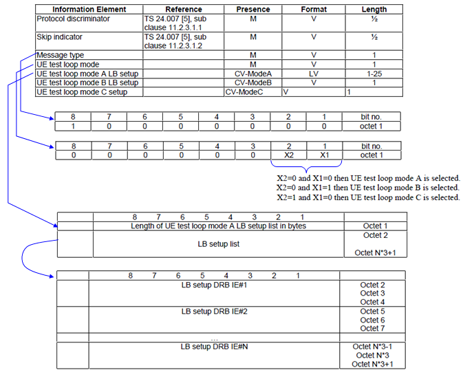
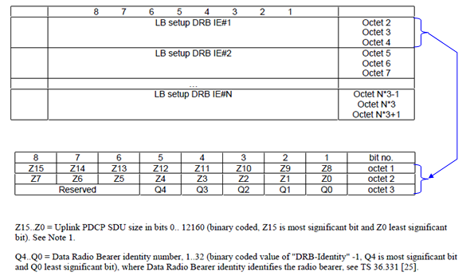
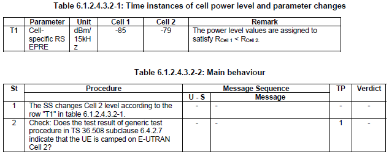
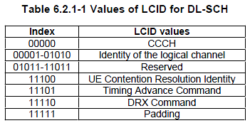

|
Protocol Conformance Home : www.sharetechnote.com |
|||||||||||||||||||||||||||||||||||||||||||||||||||||||||||||||||||||||||||||||||||||||||||||||||||||||||||||||||||||||||||||||||||||||||||||||||||||||||||||||||||||||||||||||||||||||||||||||||||||||||||||||||||||||||||||||||||||||||||||||||||||||||||||||||||||||||||||||||||||||||||||||||||||||||||||||||||||||||||||||||||||||||||||||||||||||||||||||||||||||||||||||||||||||||||||||||||||||||||||||||||||||||||||||||||||||||||||||||||||||||||||||||||||||||||||||||||||||||||||||||||||||||||||||||||||||||||||||||||||||||||||||||||||||||||||||||||||||||||||||||||||||||||||||||||||||||||||||||||||||||||||||||||||||||||||||||||||||||||||||||||||||||||||||||||||||||||||||||||||||||||||||||||||||||||||||||||||||||||||||||||||||||||||||||||||||||||||||||||||||||||||||||||||||||||||||||||||||||||||||||||||||||||||||||||||||||||||||||||||||||||||||||||||||||||||||||||||||||||||||||||||||||||||||||||||||||||||||||||||||||||||||||||||||||||||||||||||||||||||||||||||||||||||||||||||||||||||||||||||||
|
This will be on-going pages that never ends. I will update this page as I need to handle the specific test cases. You should refer to 3GPP 36.523-1 for the details. I will just put some summary and tips for each of the test cases defined in the LTE protocol conformance test specification.
To be honest, I don't think there are many people saying "3GPP document is easy to understand". One of the factors that makes the document vague/unclear is that it does not give you any practical examples as somebody mentioned in his blog. I totally agree with his opinion. But I think there is one place where you can get huge amount of examples related to each part of 3GPP documents. It is 'Conformance Test' specification (36-521 : RF Conformance, 36.521 : RRM, 36.523 : Protocol Conformance). So I think (hope) this page would help you not only for day-to-day conformance testing job, but also help you get practical understandings of other 3GPP documents. At least to me, LTE Protocol Conformance document is described in much clearer manner comparing to UMTS conformance document (34.123).
One of the questions that I got very frequently is "What am I supposed to study first ?", "Where do I have to start ?". Unfortunately there would be no clear answer to these questions... but there can be a general guideline for this. My personal guide are i) Don't try to look go through each test cases all over the test. Of course it is not a bad thing to know about each and every test cases, but you would give up very soon if you are trying to dig into the very details of each test cases. ii) Go over the test case sections as often as possible and try to think of "what kind of test cases are there in this section ?", "what would be the generic procedure for this section ?". You don't have to read the test case description yet, just imagine that you are the person who is writing the test cases in 3GPP and design the test cases on your own. By this thought process, you will have to chance to apply what you know about each layers of LTE protocol stack. And you will also appreciate for those who put their effort to design all of these test cases in 3GPP -:). You will notice that designing a test cases is not an easy and trivial thing. iii) Now you can get a little bit detail into each test case, but you don't have to go through all the test cases (it is alreay several hundred test cases are defined in 36.523). If you pick only one section that you are currently most familiar with and read all the test cases for the section, you would notice that most of the test procedure in that section is very similar to each other. Only a couple of parameter changes or a couple of additional steps. As far as I am experienced, almost always I could find one or two test cases that can represents overall test procedures for all the test cases in a specific section. Just pick those one or two test cases from each section and try to completely understand it. The test cases with star mark in this page is those that I picked as a representative test cases for a couple of sections. Of course this is based on my personal criteria and you would have different opinion. But no problem. You can pick whatever you think best represent the section.
Following is the list of sections from 36.523 V9.3.0 (2011-04). This is for the step ii) of the guideline described above.

For conformance test, we have two major procedure to go through. One is "ACTIVATE TEST MODE" and the other one is "CLOSE UE TEST LOOP". In RF Conformance, only "ACTIVATE TEST MODE" would be enough, but in Protocol Conformance we have to go through both "ACTIVATE TEST MODE" and "CLOSE UE TEST LOOP". (For the details refer to TS 36.509 '5 Test Control (TC) protocol procedures and test loop operation').
Overal function diagram for each test mode from TS 36.509 is as follows.

Message structure of CLOSE UE LOOPBACK is as follows. (For the details refer to TS 36.509 '5 Test Control (TC) protocol procedures and test loop operation').
 
Let me give you an example for the message to help you understand the message structure.
HEX String : 0F 80 00 03 01 00 01
Analysis Result : 0 : Protocol discriminator F : Skip indicator 80 : Message type (10000000) 00 : UE test loop mode (000000AB), where A=B=0 when Loopback mode is mode A 03 : Length of UE test loop mode A LB setup list in bytes 01 00 : Uplink PDCP SDU Size = 256 bits 01 : Data Radio Bearer ID = 1
Following is the list of test cases that I have gone through for peronal needs. Those with the star mark is the ones that I personally think best represents the test cases for some sections. Of course, this list would extend as I get more and more involved in LTE test process.
I will start out this page with skeletones from 36.523-1 and keep adding comments as I gain more practical experiences for each of these items. (Number of stars put besides the test case shows the importance in terms of understanding a normal UE behavior and is the items that I want to recommend you to look into first and have through understanding. If you have clear understanding of those 'start' test case, it would be easier for you to understanding other test cases as well. Of course, this is totally my personal/subjective marking and I didn't take any survey of "thumb-up" or "thumb-down" -:) )
Simply put, this test case is to check if UE changes it's serving cell from a cell to another cell when it sees a cell with better signal which meets cell reselection criteria.
Test Condition is as follows.

As you see, the required protocol sequence is defined in 36.508, not in 36.523.
Note 1 : TAI for Cell 1 and Cell 2 are different. Note 2 : The periodic tracking area updating timer T3412 is deactivated by default during the attach procedure (TS 36.508 clause 4.7.2). Note 3 : The SS does not initiate authentication and NAS SECURITY MODE COMMAND are not performed (reuse of keys allocated during the attach procedure).
7.1.1.2 DTCH or DCCH mapped to UL SCH/ DL-SCH / Reserved Logical Channel ID
Simply put, this test case is to check if UE decode LCID field of Downlink MAC PDU and act properly according to the LCID. More specifically this TC test UE response to Reserved LCID and LCID for "Identity of the logical channel" in the following table.

TP1 : This tests if UE act in the following manner or not. i) < UE is in RRC connected state with DRB with LCID = 3 > ii) SS send MAC PDU with reserved LCID (T-CRNTI is properly set for the UE) iii) UE decode the MAC PDU but should discard it since LCID is reserved.
TP2 : This tests if UE act in the following manner or not. i) < UE is in RRC connected state with DRB with LCID = 3 > ii) SS send MAC PDU with LCID = '00011'B (T-CRNTI is properly set for the UE) iii) UE decode the MAC PDU and transfer it to higher layer properly.
This test case is similar to 7.1.2.3, but 7.1.2.3 is focused more on overall RACH procedure whereas this test case is focused more on detailed parameters involved in the RACH procedure.
TP1 : This tests if UE act in the following manner or not. i) < Now in Idle Mode > ii) SS send Paging message (MAC PDU carrying the CCCH is less than messageSizeGroupA)
Note : messageSizeGroupA is specified in SIB2 as follows. (This is just an example and it may not match the value in the conformance test case)
| | +-rach-ConfigCommon ::= SEQUENCE | | | +-preambleInfo ::= SEQUENCE [1] | | | | +-numberOfRA-Preambles ::= ENUMERATED [n52] | | | | +-preamblesGroupAConfig ::= SEQUENCE OPTIONAL:Exist | | | | +-sizeOfRA-PreamblesGroupA ::= ENUMERATED [n4] | | | | +-messageSizeGroupA ::= ENUMERATED [b56] | | | | +-messagePowerOffsetGroupB ::= ENUMERATED [minusinfinity]
TP2 : This tests if UE act in the following manner or not. i) < Now in Idle State > ii) SS send Paging iii) UE send PRACH in response to Paging iv) SS send RAR (RACH Response). v) UE send RRC Connection Request vi) SS does not send 'Contention Resolution' within a certain time span (contentionResolutionTimer) vii) UE Retransmit PRACH
| | +-rach-Config ::= SEQUENCE | | | +-preambleInfo ::= SEQUENCE [0] | | | | +-numberOfRA-Preambles ::= ENUMERATED [n52] | | | | +-preamblesGroupAConfig ::= SEQUENCE OPTIONAL:Omit | | | +-powerRampingParameters ::= SEQUENCE | | | | +-powerRampingStep ::= ENUMERATED [dB2] | | | | +-preambleInitialReceivedTargetPower ::= ENUMERATED [dBm-104] | | | +-ra-SupervisionInfo ::= SEQUENCE | | | | +-preambleTransMax ::= ENUMERATED [n6] | | | | +-ra-ResponseWindowSize ::= ENUMERATED [sf10] | | | | +-mac-ContentionResolutionTimer ::= ENUMERATED [sf48] | | | +-maxHARQ-Msg3Tx ::= INTEGER (1..8) [4]
TP3 : This tests if UE act in the following manner or not. (The description for this TP in 36.523 is a little bit confusing to me for now. I will just put down as described in the specification and clarify further later). i) < Now in Idle State > ii) SS send Paging iii) UE send PRACH in response to Paging iv) SS send RAR (RACH Response). v) UE send RRC Connection Request vi) SS does not send 'Contention Resolution' within a certain time span (contentionResolutionTimer) after more than preambleTransMax transmission from UE. vii) UE retransmit PRACH using the a preamble in the same group of random access preambles as used for the first transmission of Msg3
TP4 : This tests if UE act in the following manner or not. i) < Now in Idle State > ii) Now UE has some data to transmit and the size of data (MAC PDU size) is greater than messageSizeGroupA. iii) UE transmit PRACH using using a preamble in group B of random access preambles indicated in SIB2
7.1.2.4 Random access procedure / Successful
Whether you are doing the testing job or you just want to study about LTE, I want to recommend you to take this test case as a backbone (framework) test case for all RACH process. This test case tests the most basic behavior (requirement) of RACH process and test the following three behavior (I waill call this expected behavior as 'TP'(Test Purpose) as in 3GPP 36.523).
TP1 : This tests if UE act in the following manner or not. (The most basic RACH Test) i) < Now in Idle State > ii) SS send Paging iii) UE send PRACH in response to Paging
TP2 : This tests if UE act in the following manner or not. i) < Now in Idle State > ii) SS send Paging iii) UE send PRACH in response to Paging iv) SS does not send RAR(RACH Response) within a certain time period (ra-ResponseWindowSize). v) UE resend PRACH
Note : ra-ResponseWindowSize is informed to UE by SIB2 as follows. (This is just example. The value specified in this example may differ from the value specified in this conformance test case.)
| | +-rach-Config ::= SEQUENCE | | | +-preambleInfo ::= SEQUENCE [0] | | | | +-numberOfRA-Preambles ::= ENUMERATED [n52] | | | | +-preamblesGroupAConfig ::= SEQUENCE OPTIONAL:Omit | | | +-powerRampingParameters ::= SEQUENCE | | | | +-powerRampingStep ::= ENUMERATED [dB2] | | | | +-preambleInitialReceivedTargetPower ::= ENUMERATED [dBm-104] | | | +-ra-SupervisionInfo ::= SEQUENCE | | | | +-preambleTransMax ::= ENUMERATED [n6] | | | | +-ra-ResponseWindowSize ::= ENUMERATED [sf10] | | | | +-mac-ContentionResolutionTimer ::= ENUMERATED [sf48] | | | +-maxHARQ-Msg3Tx ::= INTEGER (1..8) [4]
TP3 : This tests if UE act in the following manner or not. i) < Now in Idle State > ii) SS send Paging iii) UE send PRACH in response to Paging iv) SS send RAR (RACH Response). v) UE send RRC Connection Request vi) SS does not send 'Contention Resolution'. (SS does not send any response) vii) UE Retransmit PRACH
7.1.2.7 MAC contention resolution / Temporary C-RNTI
This is the test case to check about 'Contention Resolution' step in RACH process. It has several subtests as described below. This test would give you pretty clear understanding of mechanism of 'Contention Resolution' step.
TP1 : This tests if UE act in the following manner or not. i) < Now in Idle State > ii) SS send Paging iii) UE send PRACH in response to Paging iv) SS send RAR (RACH Response). v) UE send RRC Connection Request vi) SS does not sends any MAC PDU including 'Contention Resolution' MAC PDU within a certain time frame (Contention Resolution Timer). vii) UE send 'RRC Connection Request' again.
Note : ra-ResponseWindowSize is informed to UE by SIB2 as follows. (This is just example. The value specified in this example may differ from the value specified in this conformance test case.)
| | +-rach-Config ::= SEQUENCE | | | +-preambleInfo ::= SEQUENCE [0] | | | | +-numberOfRA-Preambles ::= ENUMERATED [n52] | | | | +-preamblesGroupAConfig ::= SEQUENCE OPTIONAL:Omit | | | +-powerRampingParameters ::= SEQUENCE | | | | +-powerRampingStep ::= ENUMERATED [dB2] | | | | +-preambleInitialReceivedTargetPower ::= ENUMERATED [dBm-104] | | | +-ra-SupervisionInfo ::= SEQUENCE | | | | +-preambleTransMax ::= ENUMERATED [n6] | | | | +-ra-ResponseWindowSize ::= ENUMERATED [sf10] | | | | +-mac-ContentionResolutionTimer ::= ENUMERATED [sf48] | | | +-maxHARQ-Msg3Tx ::= INTEGER (1..8) [4]
TP2 : This tests if UE act in the following manner or not. i) < Now in Idle State > ii) SS send Paging iii) UE send PRACH in response to Paging iv) SS send RAR (RACH Response). v) UE send RRC Connection Request vi) SS sends RRC Connection Setup message, but this does not include 'Contention Resolution' MAC PDU. vii) UE send 'RRC Connection Request' again.
TP3 : This tests if UE act in the following manner or not. i) < Now in Idle State > ii) SS send Paging iii) UE send PRACH in response to Paging iv) SS send RAR (RACH Response). v) UE send RRC Connection Request vi) SS sends RRC Connection Setup message and it includes 'Contention Resolution' MAC PDU, but the contention resolution identity does not match the UE id. vii) UE send 'RRC Connection Request' again.
TP4 : This tests if UE act in the following manner or not.(This shows what should happen if there is no problem with 'Contention Resolution' step) i) < Now in Idle State > ii) SS send Paging iii) UE send PRACH in response to Paging iv) SS send RAR (RACH Response). v) UE send RRC Connection Request vi) SS sends RRC Connection Setup message and it includes 'Contention Resolution' MAC PDU, and the contention resolution Indentity is also correct one. vii) UE send 'RRC Connection Setup Complete'.
7.1.2.8 MAC contention resolution / C-RNTI
This is test for the contention resolution step during RACH process happending in Handover process. (you should notice that RACH process is a critical part in handover process in LTE. UMTS handover process does not go through RACH process during the handover).
TP1 : This tests if UE act in the following manner or not. i) < Configure Two Cells in SS > ii) < Now in Idle State : Cell 1 > ii) SS send Paging iii) < Establish RRC Connection and Complete 'RRC Connection Reconfiguration' for activating data bearer > iv) < SS increase the power of the second cell so that UE can perform the handover to the second cell > v) SS send "RRC Connection Reconfiguration (for Handover)" and this message does not include any explicit Random Access Preamble configuration. vi) UE send 'RRC Connection Reconfiguration Complete' to SS Cell2. vii) SS does not schedule any PDCCH transmission with UE C-RNTI. viii) UE resend 'RRC Connection Reconfiguration Complete'
TP2 : This tests if UE act in the following manner or not. i) < Configure Two Cells in SS > ii) < Now in Idle State : Cell 1 > ii) SS send Paging iii) < Establish RRC Connection and Complete 'RRC Connection Reconfiguration' for activating data bearer > iv) < SS increase the power of the second cell so that UE can perform the handover to the second cell > v) SS send "RRC Connection Reconfiguration (for Handover)" and this message does not include any explicit Random Access Preamble configuration. vi) UE send 'RRC Connection Reconfiguration Complete' to SS Cell2. vii) SS does sends PDCCH transmission with UE C-RNTI. viii) UE should not resend 'RRC Connection Reconfiguration Complete'
7.1.3.5 Correct HARQ process handling / CCCH
Note : This TC looks a little confusing to me.. I may need further investigation for clarification.
Note : It would be not easy to implement this on the test system since it has to check HARQ ACK/NACK on real time.
This is to check whether UE send HARQ ACK or NACK properly in response to the message from the network (RAR, CR). This test case test the following check points (TP : Test Purpose).
TP 1 : This is to check the following two behavior. i) UE send 'PRACH' ii) SS send RAR with RA-RNTI iii) UE should not send any ACK or NACK for RAR.
TP 2 : This is to check the following two behavior. i) UE send 'PRACH' ii) SS send RAR with RA-RNTI iii) UE send 'Msg3 (RRC Connection Request)' iv) SS send RRC Connection Setup and Contention Resolution with wrong UE ID, addressed to T-CRNTI v) UE should not send any ACK or NACK
TP 3 : This is to check the following two behavior. i) UE send 'PRACH' ii) SS send RAR with RA-RNTI iii) UE send 'Msg3 (RRC Connection Request)' iv) SS send RRC Connection Setup and Contention Resolution with right UE ID, addressed to T-CRNTI with wrong CRC v) UE should not send NACK
TP 4 : This is to check the following two behavior. i) UE send 'PRACH' ii) SS send RAR with RA-RNTI iii) UE send 'Msg3 (RRC Connection Request)' iv) SS send RRC Connection Setup and Contention Resolution with right UE ID, addressed to T-CRNTI with right CRC v) UE should not send ACK
7.2.2.5.1 UM RLC / 5-bit SN / Correct use of sequence numbering
This test case test basic operation of UM RLC, so it can be a framework for UM RLC.
TP 1: This is to check the following two behavior. i) UE is in RRC_CONNECTED mode ii) UE transmit the first PDU and the SN for the PDU is 0
TP 2 : This is to check the following two behavior. i) UE is in RRC_CONNECTED mode ii) UE transmit the first PDU and the SN for the PDU is 0 iii) UE transmit the next PDU and the SN for the PDU is incremented by 1
TP 3 : This is to check the following two behavior. i) UE is in RRC_CONNECTED mode ii) UE transmit the first PDU and the SN for the PDU is 0 iii) UE transmit the next PDU and the SN for the PDU is incremented by 1 iv) UE transmit more than 32 PDUs and the SN should be wrapped around after transmitting 32 PDUs
8.1.1.1 RRC / Paging for connection in idle mode
Test Purpose : This is to check the following two behavior. i) UE should not respond to Paging carrying the incorrect UE ID ii) UE should respond to Paging carrying the correct UE ID
What is the "correct UE ID" ? The correct UE-ID is the one (S-TMSI) which is assigned to the UE during the registration.
8.1.3.4 RRC connection release / Redirection to another E-UTRAN frequency
I think just the following sequence would explain everything. No further details would be required.
SIB5 should carry the EARFCN for the destination (target) cell.
+-c1 ::= CHOICE [systemInformation] +-systemInformation ::= SEQUENCE +-criticalExtensions ::= CHOICE [systemInformation-r8] +-systemInformation-r8 ::= SEQUENCE [0] +-sib-TypeAndInfo ::= SEQUENCE OF SIZE(1..maxSIB[32]) [1] | +- ::= CHOICE [sib5] | +-sib5 ::= SEQUENCE | +-interFreqCarrierFreqList ::= SEQUENCE OF SIZE(1..maxFreq[8]) [1] | +-InterFreqCarrierFreqInfo ::= SEQUENCE [001100] | +-dl-CarrierFreq ::= INTEGER (0..maxEARFCN[65535]) [5230] | +-q-RxLevMin ::= INTEGER (-70..-22) [-53] | +-p-Max ::= INTEGER OPTIONAL:Omit | +-t-ReselectionEUTRA ::= INTEGER (0..7) [0] | +-t-ReselectionEUTRA-SF ::= SEQUENCE OPTIONAL:Omit | +-threshX-High ::= INTEGER (0..31) [2] | +-threshX-Low ::= INTEGER (0..31) [1] | +-allowedMeasBandwidth ::= ENUMERATED [mbw50] | +-presenceAntennaPort1 ::= BOOLEAN [FALSE] | +-cellReselectionPriority ::= INTEGER OPTIONAL:Omit | +-neighCellConfig ::= BIT STRING SIZE(2) [01] | +-q-OffsetFreq ::= ENUMERATED [dB0] OPTIONAL:Exist | +-interFreqNeighCellList ::= SEQUENCE OF OPTIONAL:Omit | +-interFreqBlackCellList ::= SEQUENCE OF OPTIONAL:Omit +-nonCriticalExtension ::= SEQUENCE OPTIONAL:Omit
RRC Connection Release should carry the E-ARFCN of the destination cell.
DL-DCCH-Message ::= SEQUENCE +-message ::= CHOICE [c1] +-c1 ::= CHOICE [rrcConnectionRelease] +-rrcConnectionRelease ::= SEQUENCE +-rrc-TransactionIdentifier ::= INTEGER (0..3) [0] +-criticalExtensions ::= CHOICE [c1] +-c1 ::= CHOICE [rrcConnectionRelease-r8] +-rrcConnectionRelease-r8 ::= SEQUENCE [100] +-releaseCause ::= ENUMERATED [loadBalancingTAUrequired] +-redirectedCarrierInfo ::= CHOICE [eutra] OPTIONAL:Exist | +-eutra ::= INTEGER (0..maxEARFCN[65535]) [5250] +-idleModeMobilityControlInfo ::= SEQUENCE OPTIONAL:Omit +-nonCriticalExtension ::= SEQUENCE OPTIONAL:Omit
8.1.1.6 RRC / BCCH modification in connected mode
Test Purpose : Test if UE correctly respond to Paging message with systemInfoModification and properly check systemInfoValueTag in SIB1 and successfully decode other SIBs according to systemInfoValueTag in SIB1
8.1.2.1 RRC connection establishment / Ks=1.25/ Success
This would be one of the simplest and standard test case. You can use this test as a basic operation test both for UE and test equipment.
Test Purpose : To see if UE can detect Paging message and establish the proper RRC Connection in response to the pagina message.
8.1.2.3 RRC connection establishment / Return to idle state after T300 timeout
Test Purpose : Simply put, this is for testing T300 operation. What is T300 ? It is the timer that defines the timing from 'RRC Connection Request' to the response from the SS. UE has to start T300 right after it sends RRC Connection Request and stops the timer when it gets the response to the message from SS. But if the UE does not get any response until T300 expires, it should get back to IDLE mode. T300 value is specified in SIB2.
Test Purpose : To check if UE successfully 're-establish' the default EPS bearer in response to Paging message. (I used the term "re-establish" because UE does not re-esablish the EPS bearer. It will use the default EPS bearer created during registration. It will establish only RRC session to use the default EPS bearer which has been created during the registration process.
8.2.1.3 RRC connection reconfiguration / Radio bearer establishment / Success /Dedicated bearer
Test Purpose : Overall Protocol Sequence is very similar to 8.2.1.1, but the difference in this case is that UE is not using the EPS bearer (default EPS bearer) which has been established during registration. It creates a new EPS bearer (Dedicated EPS Bearer) when it gets Paging message.
8.2.3.1 RRC connection reconfiguration / Radio bearer release / Success
Test Purpose : To check if UE can properly release the radio bearer that has been established. It has to release not only RRC layer, but also all the lower layer configurations properly.
8.2.4.2 RRC connection reconfiguration / Handover / Success / Common preamble
I recommend you to study this test case as much as possible and take this as a back bone of all the handover related tests.
Test Purpose : Check if UE successfully recognize the target cell and performe measurement, handover and sent 'RRC Connection Reconfig Complete' message to target cell.
8.3.3.1 Measurement configuration control and reporting / SON / ANR / CGI reporting of E-UTRAN cell
Test Purpose : Check if i) UE successfully detect the condition for Event A3 and report it through Measurement Report ii) UE successfully perform detect the SIBs of neighbour cell during the connected mode (connected mode DRX) and report the neighbour cell CGI through Measurement Report
8.5.1.1 Radio link failure / RRC connection re-establishment success
This test case represents a situation that I was asked about the most. The question is "How can I emulate the situation to show how UE behavior when Radio Link is broken ?", meaning the duplication of Radio Link Failure. The real questions here is "What is the definition of Radio Link Failure ?" and "how to duplicate the Radio Link Failure". I don't think this test cases alone will give you all the details of the answers to the question, but at least you would get some big picture of this situation.
I strongly recommend you the test case description in 3GPP 36.523. In the description, you will see it refers to a couple of other specifications as well (e.g, 36.331, 36.304 etc). Follow the references as much as possible. Don't try doing all of this at once.. it will take time.
9.1.2.1 Authentication accepted
Test Purpose : Check if UE properly calculated Authentication-related parameters and successfully completes Authentication Process.
Note : I recommend you to read this test case description on 3GPP 36.523 carefully and understand very detail. It will help you to understand LTE Authentication procedure.
Test Purpose : Test if UE properly handles the situation when it received 'Authentication Reject' message from the network.
|
|||||||||||||||||||||||||||||||||||||||||||||||||||||||||||||||||||||||||||||||||||||||||||||||||||||||||||||||||||||||||||||||||||||||||||||||||||||||||||||||||||||||||||||||||||||||||||||||||||||||||||||||||||||||||||||||||||||||||||||||||||||||||||||||||||||||||||||||||||||||||||||||||||||||||||||||||||||||||||||||||||||||||||||||||||||||||||||||||||||||||||||||||||||||||||||||||||||||||||||||||||||||||||||||||||||||||||||||||||||||||||||||||||||||||||||||||||||||||||||||||||||||||||||||||||||||||||||||||||||||||||||||||||||||||||||||||||||||||||||||||||||||||||||||||||||||||||||||||||||||||||||||||||||||||||||||||||||||||||||||||||||||||||||||||||||||||||||||||||||||||||||||||||||||||||||||||||||||||||||||||||||||||||||||||||||||||||||||||||||||||||||||||||||||||||||||||||||||||||||||||||||||||||||||||||||||||||||||||||||||||||||||||||||||||||||||||||||||||||||||||||||||||||||||||||||||||||||||||||||||||||||||||||||||||||||||||||||||||||||||||||||||||||||||||||||||||||||||||||||||